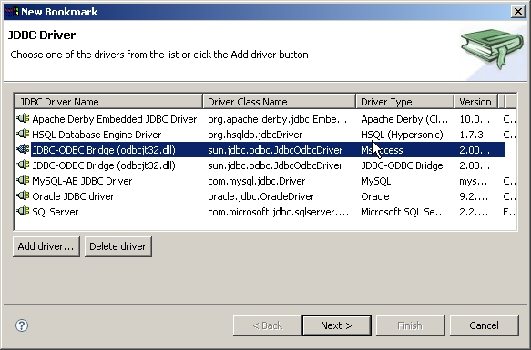
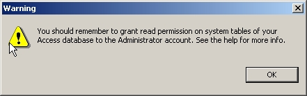

Ms Access is a database with no public free JDBC driver, so if you want to get to your data from Quantum you'll use the JDBC-ODBC driver. If you have a propietary JDBC driver you'll probably be better off using it as a generic driver. From version 3.1 of Quantum there is added support for Access. The following points will outline how to get it and what to expect. The support has been tested with Access 2000 and may fail with any other version, as it depends on the data structure of the Access system tables. Feedback on that will be welcome.
First thing you need to create a new bookmark using the Access inside driver of Quantum. This driver is simply the old JDBC-ODBC driver but identifying the database to use as Access so Quantum will know how to treat it. In the image you see the Access driver highlighted.

When you select it, the following message will appear:

This is because the access support in Quantum will make use of the system tables to extract information unavailabe via the ODBC driver. Those tables, although you can read them from inside Access with no problem (once they are visible), are not accessible to the ODBC driver, and so to the JDBC-ODBC bridge. So you need to allow the Administrator user (that's the default user) to read those tables. For that, you open your Access database from Access and go to Tools->Options->View and mark the "System Objects" check box. You'll now be able to see the system tables in your Tables tab. Then go to Tools->Security->User and Group Permissions and grant read access to the administrator user for all the tables starting with "MSys". After you have done it, the Quantum adapter will be able to access those tables and extract some measure of metadata from your database.
Afterwards, the setting up of the bookmar is identical to a normal JDBC-ODBC setup. You simply put your ODBC source in the URL and will access it.
If you already have MsAccess bookmarks using the normal JDBC-ODBC driver, you can simply change the JDBC driver (and give read permissions to the system tables, of course) to enjoy the new features.
Properties dialog. That
SQL is extracted from the system tables and can be wrong, so don't trust it
too much for the moment. If you see some malformed SQL (doesn't match the
SQL that you see when you design your Query in Access), please contact the
developers team giving your query SQL.